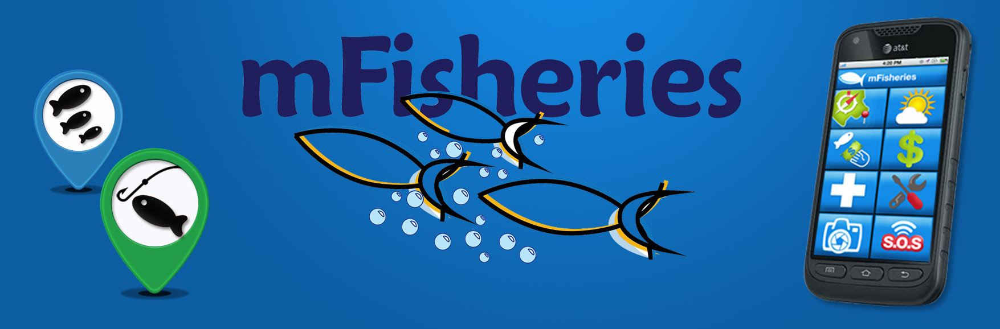

The general objectives of the m-Fisheries research project are:
a) To promote multi-stakeholder knowledge exchange and dialogue about the potential contribution of ICTs for economic development and poverty alleviation in the Caribbean, with particular emphasis on the small scale fisheries sector.
b) To develop capacity in the Caribbean to pursue opportunities arising from the provision of innovative mobile-enabled services for its poor communities, and to provide related empirical data and analysis to inform Caribbean policy and regulation.
The specific objectives of the m-Fisheries research project were as follows:
1. To map mobile service and application use in the fishing industry, with particular emphasis on the Caribbean;
2. To gather data on activities, challenges and needs of fisher folk in Trinidad and Tobago to explore their usage patterns and perceptions of the mobile phone;
3. To develop a Mobile Service Cost Model as a methodology for selecting appropriate mobile implementation technologies and end-user services for the delivery of, and access to, m-Fisheries applications;
4. To facilitate institutional capacity building in the area of mobile innovation;
5. Based on outputs of the foregoing activities, to design and implement three m-Fisheries applications and to deploy and evaluate their use and applicability among the surveyed group of fisher folk;
6. To evaluate the overall project as a means of empowering low-income earners through the mobile phone, building mobile innovative capacities and establishing institutional linkages for collaboration.